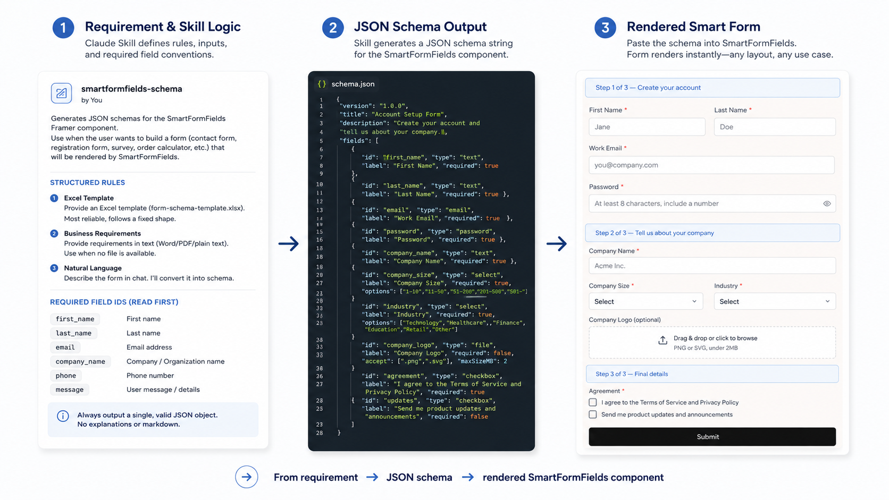

These examples focus on how I turn design decisions into working prototypes, structured UI logic, and implementation-ready specs for developers.
01
SmartFormFields
Design-system form generator · Claude Skill

A Claude Skill that turns plain-language requirements, Excel templates, or content-change requests into a validated JSON schema for the design system's Smart Form component — enforcing field IDs, validation, and conditional logic automatically.
Claude SkillJSON schemaFramer componentDesign system
Interaction design for an AI assistant inside another app's input box: distinguishing person vs. AI, ambient suggestion pills, and attachment-reading behavior. Delivered as interaction specs and HTML prototypes for engineering.
A real-time prototype mapping audio input to visual states — speaking duration, pitch, and loudness drive how a tree blooms and grows, built to make invisible input visible through code.
A three-day AI-native product that turns birth data into a Five Elements profile, radar chart, and playable 2D pixel city — built end-to-end with React and the Gemini API.